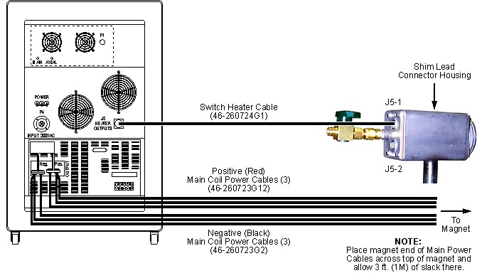

Illustration 2: Magnet Power Supply Connections, 750 Amp Power Supply

| NOTE: | Clean all connections on the Main Leads and Main Lead Extensions to prevent high resistance contacts and minimize voltage drops. Brass wool or scouring pads can be used to clean connections. |
| NOTE: | Make sure all nuts are tightened sufficiently to prevent a high resistance contact. Connect red cables to the positive (+) buss bar and black cables to the negative (-) buss bar. Two red and two black cables are connected in parallel to the buss bars for a 750 amp power supply, and three red and three black cables for a 1,000 amp power supply. Make sure the cable lugs and/or exposed wire from the Ramp Cables are not touching the case of the Main Coil Power Supply. |
| NOTE: | Either heater connector J5-1 or J5-2 can be used to turn on the heater(s). See Illustration 2 or Illustration 3. Do not connect two heater cables at the same time. |
Illustration 2: Magnet Power Supply Connections, 750 Amp Power Supply
Illustration 3: Magnet Power Supply Connections, 1,000 Amp Power Supply
